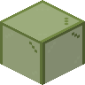
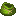

#c:dyed/green
物品标签 · 12 个已收录成员
标签成员 (12)

绿色玻璃门glassential:green_glass_door绿色玻璃活板门
glassential:green_glass_trapdoor

绿色收纳袋minecraft:green_bundle
 绿色挽具
绿色挽具minecraft:green_harness
 绿色雪怪皮毛
绿色雪怪皮毛eternal_starlight:green_yeti_fur
 绿色雪怪皮毛地毯
绿色雪怪皮毛地毯eternal_starlight:green_yeti_fur_carpet
 绿色横旗
绿色横旗supplementaries:flag_green
 绿色礼物盒
绿色礼物盒supplementaries:present_green
 绿色陷阱礼物盒
绿色陷阱礼物盒supplementaries:trapped_present_green
 绿色蜡烛烛台
绿色蜡烛烛台supplementaries:candle_holder_green
 绿色遮阳棚
绿色遮阳棚supplementaries:awning_green
 绿色彩旗
绿色彩旗supplementaries:bunting_green
使用该标签的配方
无